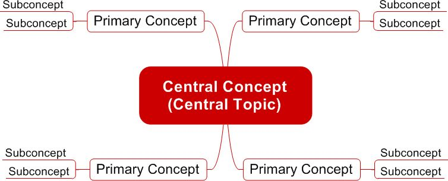
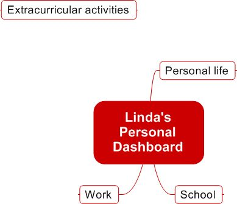
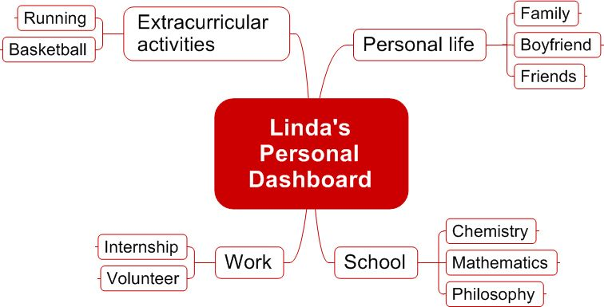

This is not an exhaustive list, and most visual mapping programs have so much functionality that those of us who specialize in them are still trying to apply them all.
I hope the discussion thus far has convinced you that visual mapping taps into more of your brain’s capabilities, helping you to learn more and to be more productive, resourceful, and creative.
Visual maps seek to capture and consolidate all information on a particular subject in one place. Visual mapping represents what you know about a given topic. Creating a visual map is a great way for you to identify and relate key concepts from lectures and readings. As you compose a visual map, you’ll come to realize that visual mapping is very intuitive.
Here you’ll find a breakdown of the basic steps to visual mapping. With each step, I’ll expand upon my own example. I’ve chosen to use a “personal dashboard” — a one-page or one-screen summary of someone’s personal life. My subject is Linda (modeled after my wife at a time when we first met), an excellent student at the fictional Visual Mapping University.
As you read through the steps, you should attempt to compose a visual map as well (a worksheet with mind mapping steps is available in Appendix 1). If nothing else comes to mind, you could draw your own personal dashboard. Try this freehand on a blank sheet of paper or with a visual mapping program if you have one (visual mapping programs will be discussed in section 2.4). The more of these visual maps you complete, the better and faster you’ll become at creating them. Even with something as intuitive as visual mapping, practice improves performance.
What is the concept, topic, or subject that you want to map?
In my example, we’ll be mapping Linda’s personal dashboard to help her understand and organize her life. Select your concept or topic as well.
Do you have all the information you need at hand? If not, get it.
In my example, I have gathered all the relevant information about Linda.
Simplicity is the driving force of all visual maps. Don’t include everything. Map only the key ideas and avoid writing sentences.
When starting to construct a visual map, it is important to define one central, most inclusive concept. This central concept is equivalent to a title or a main heading. More specific concepts will then be arranged in hierarchical fashion subordinate to the key concept.
What is the central concept, topic, idea, word, question, or problem around which you will build your map?
In my example, the main concept is Linda’s personal dashboard.
Primary concepts and other subconcepts radiate out from the map’s central concept. Primary concepts are the key concepts that produce the greatest number of associations to the central concept. They are equivalent to chapter headings and should fully describe your map’s topic at a high level. Creating effective basic ordering entries is a critical first step when creating a mind map because they serve as idea catalysts and shape the content and meaning of the rest of the map.

When you create a visual map, remember that you are building an “emergent structure.” As you transfer ideas from your brain to paper (computer screen if you’re using a computer program), keep in mind that they don’t need to be perfectly arranged or styled at first. Organization and presentation can come later. In fact, I highly recommend that you initially simply “dump” all the information and worry about organization and presentation later. Think of what you are doing as similar to building a house: you lay the foundation before you put in the framing, windows, flooring, and so on.
Here are some ordering ideas for your primary concepts and subconcepts:
When you’re not exactly sure where to place an idea in the hierarchy of concepts, you can temporarily “park” it in an open area of the map as a floating concept. Floating concepts are not attached to any other topics and can be freely positioned anywhere on the map. Floating concepts are a great way to quickly record a series of ideas in a visual map, such as when brainstorming or taking meeting notes, without having to slow down to think about where an idea belongs.
Let’s apply what we just learned. What are the concepts that can be associated with the central concept?
In my example, the three primary concepts are personal life, school, and work. I also have the floating extracurricular activities concept. I’ve left it floating because I’m not sure whether to make it a primary concept or place it within one of the existing primary concepts as a subconcept.

To draw the visual map, place the central concept at the center of the visual map, with primary concepts branching off the central concept.
At this point, add additional concepts that help explain or expand the primary concepts. Use a top down approach, working from general to specific or use a free association approach by brainstorming ideas and then developing links.
In my example, I decided to make extracurricular activities a primary concept, rather than adding it as a secondary concept to work, school, or personal life.

Continue creating the visual map and associating additional concepts. How is your visual map coming along?
You will almost always get new ideas as you start mapping. It’s natural and to be expected, so just incorporate everything important that comes to mind, even if it means that you must reposition other terms and change links. This flexibility and dynamic nature is what makes visual maps so useful.